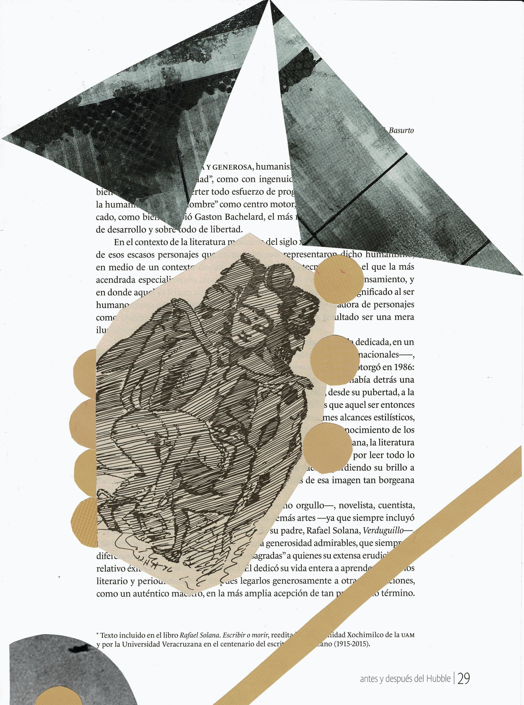

Composición Atmósfera | Intervención
La estética discontinua, reordena la visión del mundo. La frontera entre el arte y la vida se difumina, para crear una ilusión pictórica. Al oponerse a la síntesis moderna, la fragmentación emite palabras de libertad. La unidad se rompe para reconocer la memoria.
